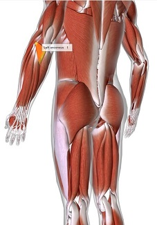
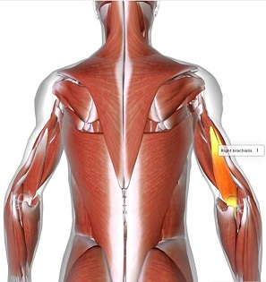
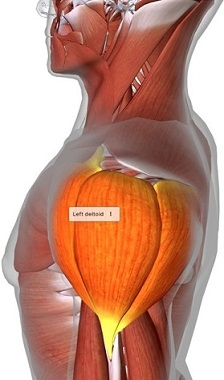
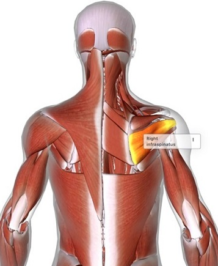
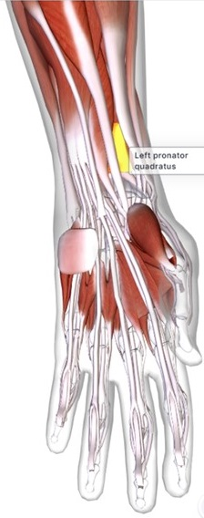
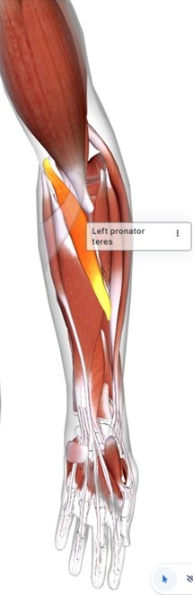
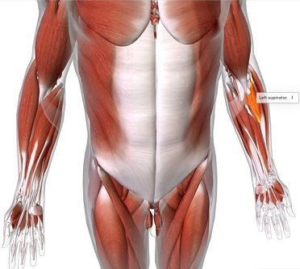
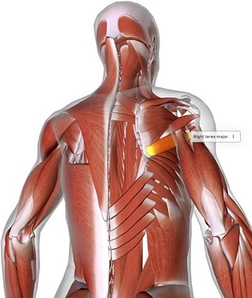
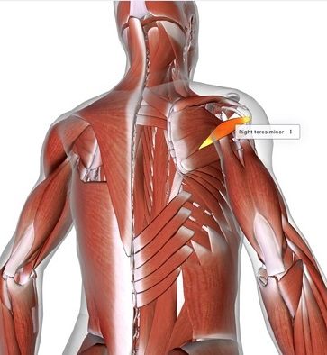
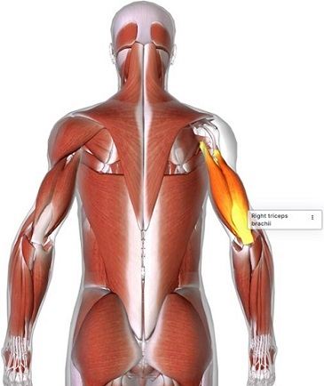

Anconeus |
Biceps brachii |
Brachialis |
Brachioradialis |
Coracobrachialis |
Deltoid |
Infraspinatus |
Palmaris longus |
Pronator quadratus |
Pronator teres |
Subscapularis |
Supinator |
Supraspinatus |
Teres major |
Teres minor |
Triceps brachii
-------------------------------------------------------------------------------------------------------------------
Anconeus |
Meaningancon = elbow |
Function extends elbow & |
Originepicondyle (protuberance above |
Insertionbony prominence of ulna |
spaceholder |
_________________________ | |||||
Biceps brachii |
Meaningbiceps = double-headed |
Functionsupinates (turning, so palm |
Origin 2 loci: above and in the |
Insertion 2 loci: tuberosity (rounded | |
_________________________ | |||||
Brachialis |
Meaning brachi = upper arm |
Functionflexes the elbow |
Origindistal (away from center |
Insertion coracoid process (short
| |
_________________________ | |||||
Brachioradialis |
Meaningbrachi = upper arm from shoulder to elbow |
Functionpronates, supinates |
Originabove the condylar |
Insertionbony projection of distal radius
| |
_________________________ | |||||
Coracobrachialis |
Meaningcoraco = ravens beak |
Functionflexes & adducts arm, |
Originthe coracoid process |
Insertionbrachial region (humurus) | |
_________________________ | |||||
Deltoid |
Meaningdeltoeides = triangular |
Functionflexes & rotates shoulder, |
Originclavicle (collarbone), |
Insertion deltoid tuberosity
| |
_________________________ | |||||
Infraspinatus |
Meaninginfra = below |
Functionrotate humerus, |
Originintraspinatus fossa of scapula |
Insertion greater protuberance
| |
_________________________ | |||||
Palmaris longus |
Meaningpalma = palm of or |
Functionflexes wrist, tenses |
Originepicondyle (protuberance above |
Insertionpalmar aponeurosis (sheet of
| |
_________________________ | |||||
Pronator quadratus |
Meaningpronare = to bend forward |
Functionmaintains proper distance |
Origininner part of ulna |
Insertioninner part of radius | |
_________________________ | |||||
Pronator teres |
Meaningpronare = to bend forward |
Functionrotates lower arm, so |
Origingreater protuberance |
Insertionmiddle of radius | |
_________________________ | |||||
Subscapularis |
Meaningsub = under or below |
Functionadducts humerus, stabilizes |
Originsubscapular fossa |
Insertionsmaller protuberance of humerus | |
_________________________ | |||||
Supinator |
Meaningsupination = rotation of forearm |
Functionrotates forearm, so palm can face up |
Origin epicondyle (protuberance above |
Insertionradial shaft |
|
_________________________ | |||||
Supraspinatus |
Meaningsupra = above or beyond limits |
Functionabducts arm, stabilizes |
Originsupraspinous fossa |
Insertiongreater protuberance
| |
_________________________ | |||||
Teres major |
>Meaningteres = round & smooth or cylindrical |
Functionrotates & adducts humerus |
Originouter border & |
Insertionbicipital groove of humerus | |
_________________________ | |||||
Teres minor |
Meaningteres = round & smooth or cylindrical |
Functionone of the four rotary cuff muscles |
Originouter border of scapula |
Insertiongreater protuberance
| |
_________________________ | |||||
Triceps brachii |
Meaningtricep = three headed |
Functionadducts & extends upper arm |
Origin3 loci: greater protuberance |
Insertionolecranon (bony prominence of
|